I ate here in February 2024😄
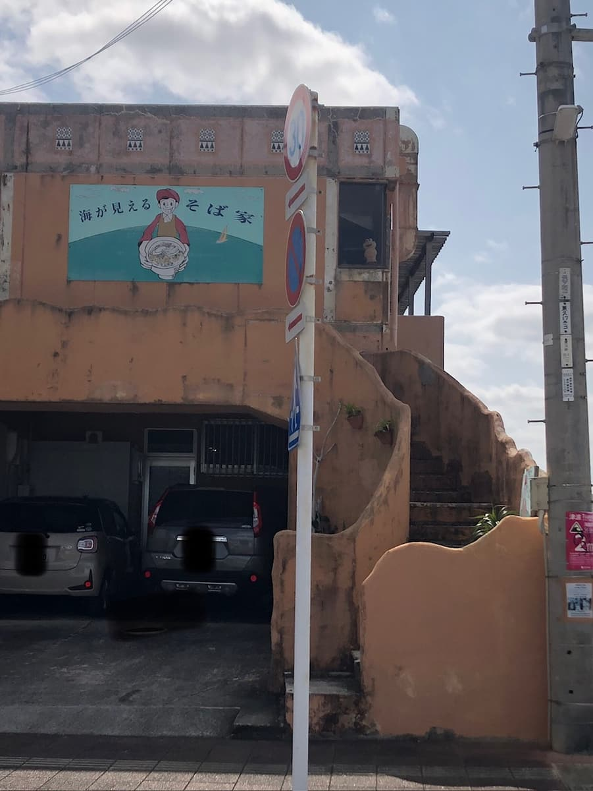
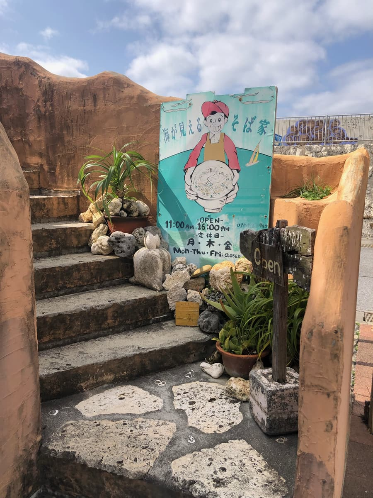
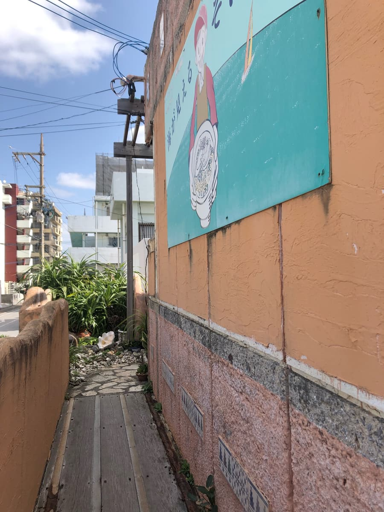
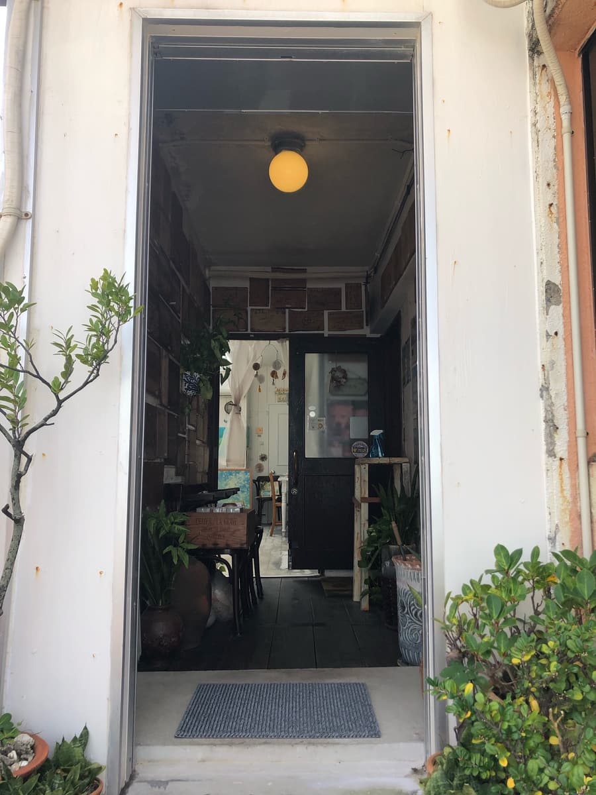
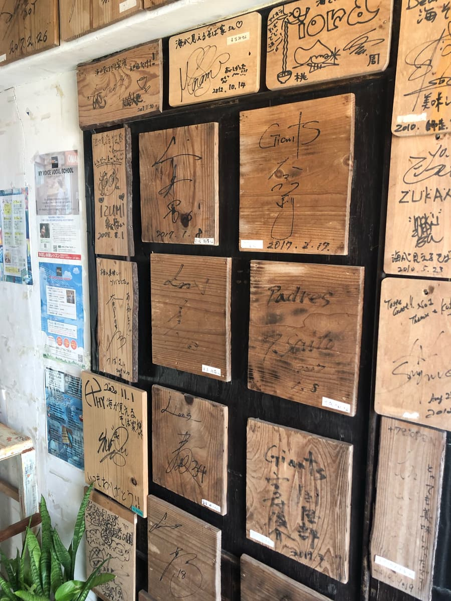
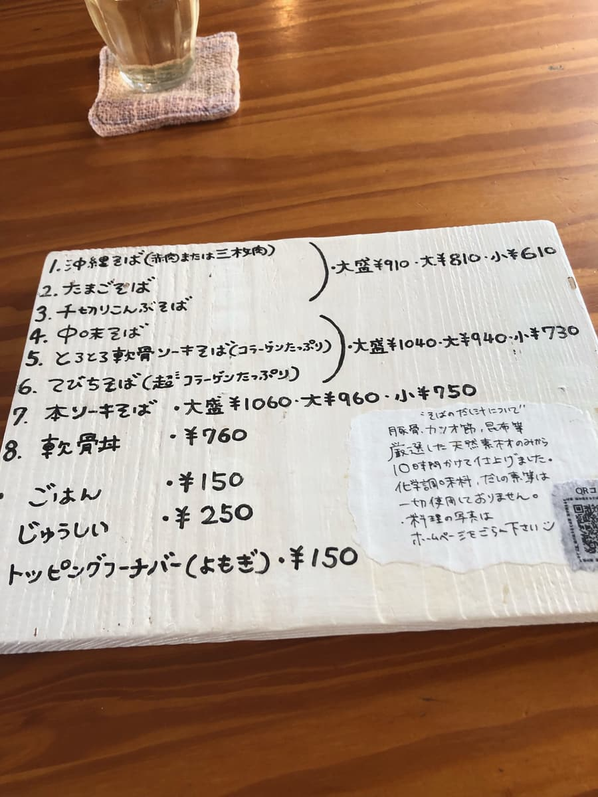
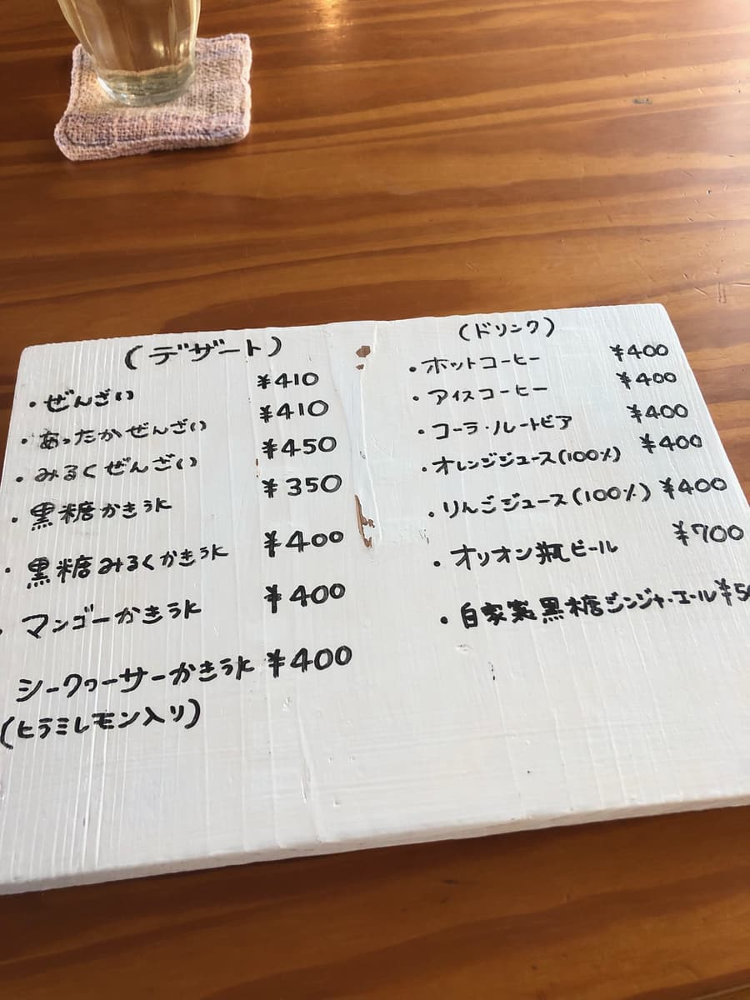
From the menu I ordered the "Okinawa soba (red meat or braised pork belly)" listed as "1." The staff asked which topping I wanted, and while I was deliberating, they explained "you can have both"😆 "Then both, please," I said, ordering the mix.
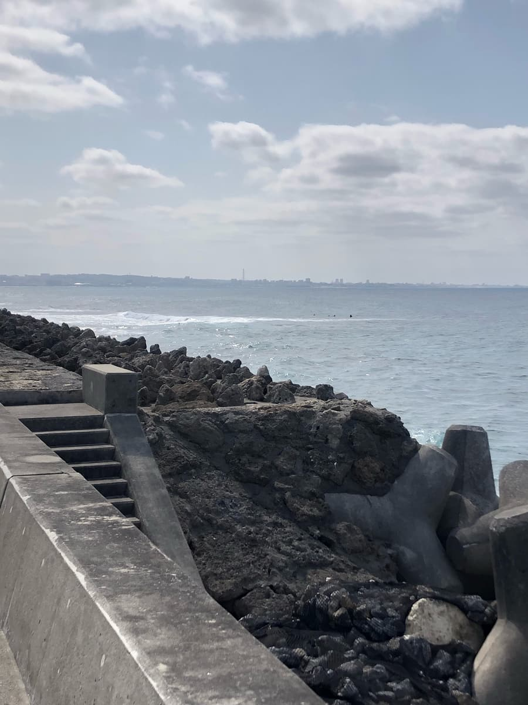
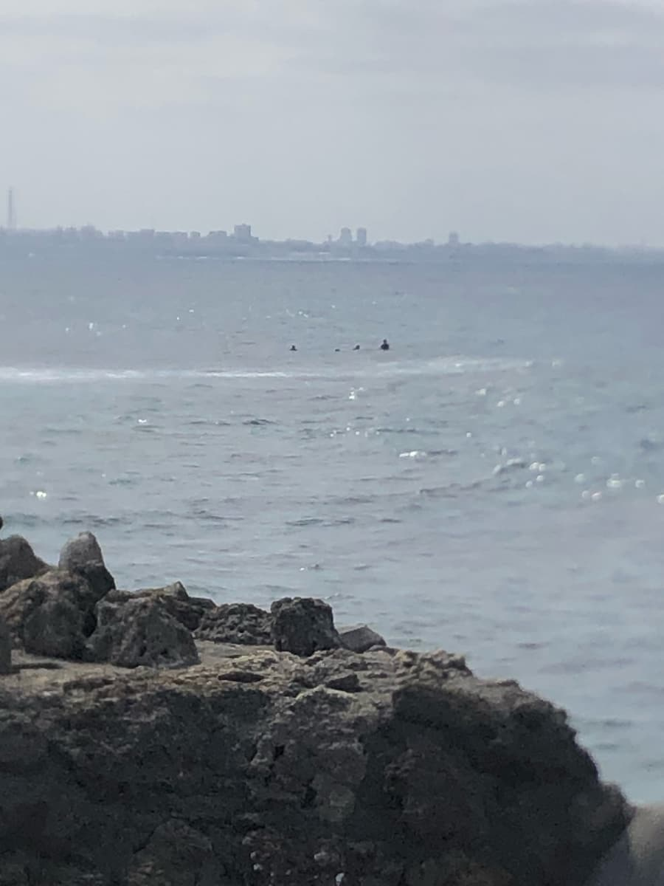
After ordering, I checked out the sea view from inside😄 The photos above were taken standing up, but I thought the visible stretch of sea was narrower than expected (^0^;) You can see the horizon, but sitting at a table the view seems even worse.
The seawall was raised in construction a little while ago to counter waves overtopping it, so the view has probably gotten worse than it used to be.
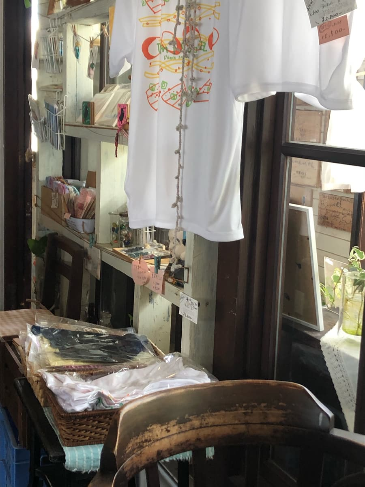
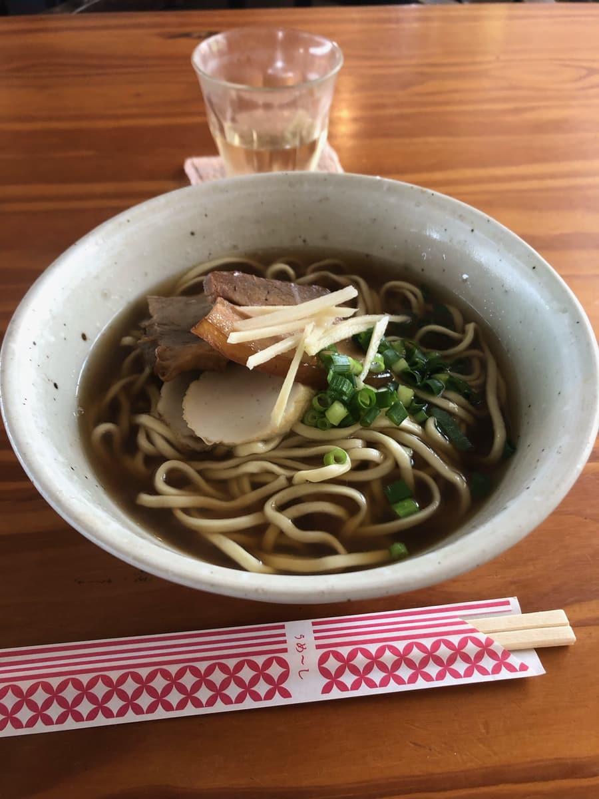
While I was observing the shop, the "Okinawa soba" arrived😆 As it was being delivered, there was the nice aroma of the broth they'd described their commitment to. It's a broth heavy on bonito😋
A gulp of the broth. As expected, it's a broth with plenty of bonito, and delicious😋
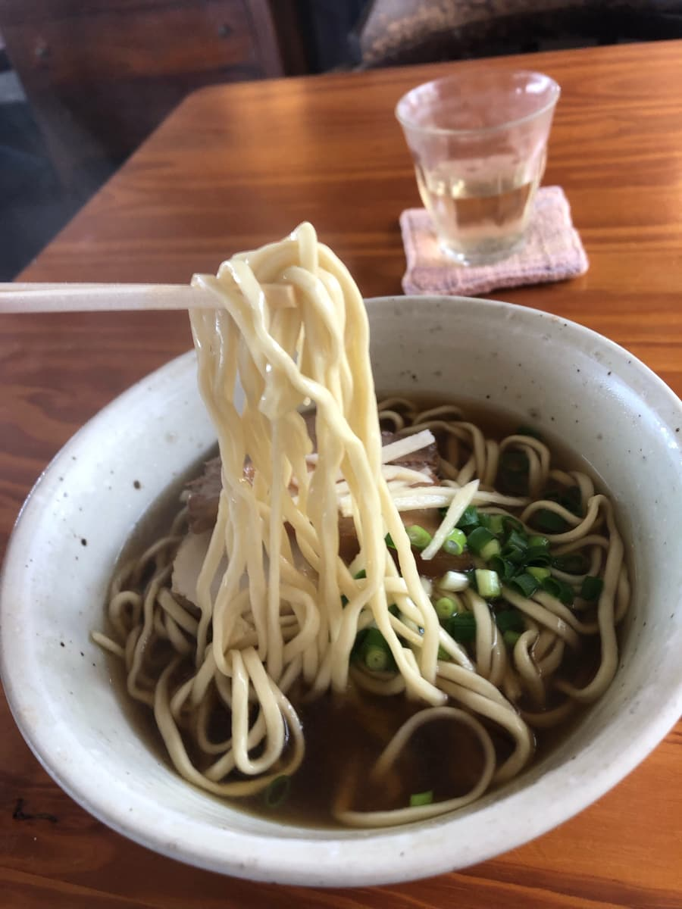
Next, the noodles. They're thin and straight, and soft.
Next I ate the red meat; it's very salty, like suchika (salt-cured pork). The texture is also firmer than anything at the Okinawa soba shops I've been to so far.
The braised pork belly is likewise firm.
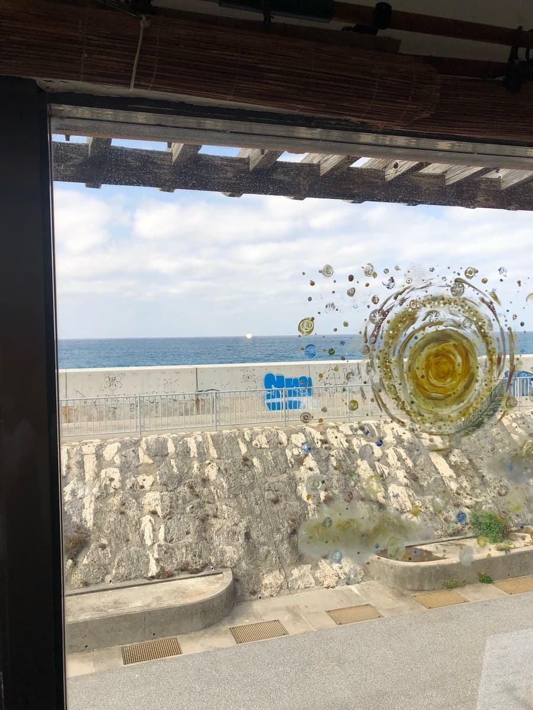
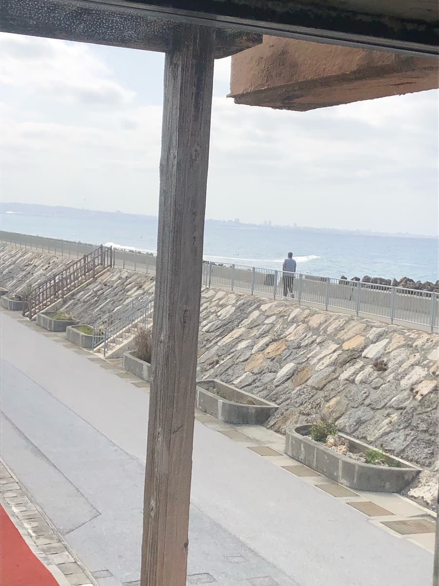
Rating (9/15): The broth seems to be something they're committed to, with plenty of bonito, and it was delicious, but the red meat and braised pork belly toppings were the firmest of all the Okinawa soba shops I've been to so far. Meltingly tender meat really is best. Unfortunately, the sea view was also hard to see because of the seawall construction.
Noodles: ★★★☆☆（3）
Soup: ★★★✬☆（3.5）
Toppings: ★★✬☆☆（2.5）